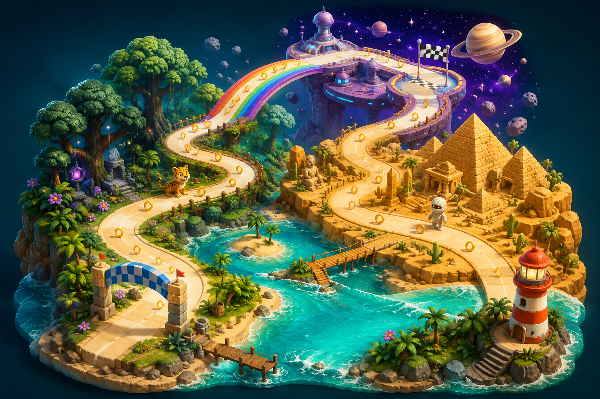
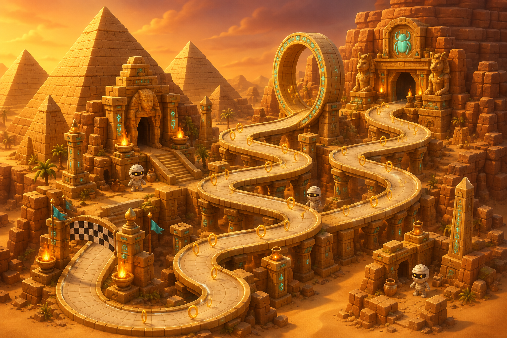
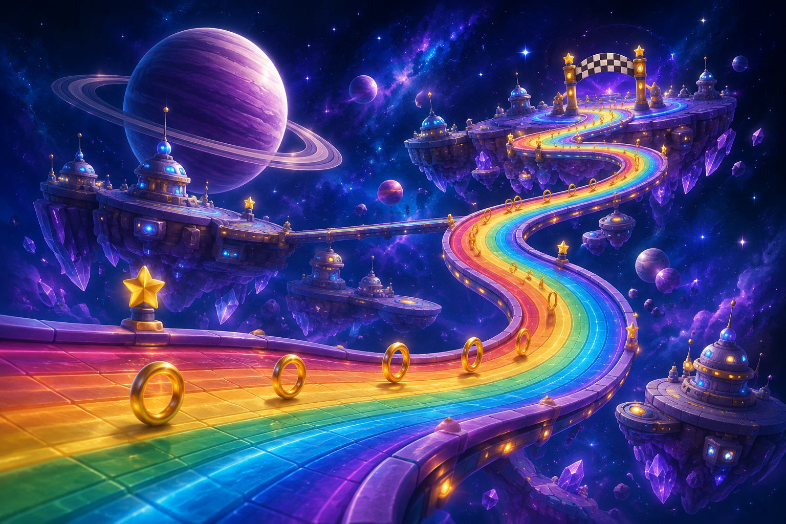

01 · WINDING EXPEDITIONRainbow RallyA sweeping journey with forest chases, mummy ambushes, rainbow rails, and a giant loop.Balanced mix · winding turnsPlayable route orderCoast → Forest → Desert → Sky rails → Loop → Space → Sunset coast
02 · SWITCHBACK ADVENTURETwist & DashSharper bends and more mummy dodges, with a forest chase and a rainbow-rail finale.More dodging · tighter turnsPlayable route orderDesert → Loop → Forest → Space → Sky rails → Sunset coast
03 · SKY-HIGH JOURNEYSkyline SprintSpace comes early. Longer sky rails and forest stretches lead to desert ambushes and a final loop.Longer rails · longer forestPlayable route orderCoast → Space → Sky rails → Forest → Desert → Loop → Sunset coast